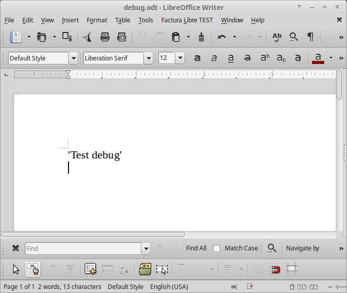

Outils pour Debug¶
Debug : Montrer des traces dans une console¶
Seulement sous Linux
Sub Debug()
'Create service
util = createUnoService("org.universolibre.EasyDev")
util.debug("Test debug")
End Sub

Sous windows, vous pouvez ouvrir un nouveau document Writer, le sauvegarder avec comme nom debug.odt et montrer des traces de debug dans ce document.
Log : Sauvegarder des traces de debug dans un fichier de log¶
Sub LogFile()
util = createUnoService("org.universolibre.EasyDev")
util.log("/home/USER/log.txt", util)
End Sub
Ajoute automatiquement la date et l’heure dans les traces.
2015-10-28 20:56:35 - EasyDev - <uno_component.EasyDev object at 0x7f96caf34438>
2015-10-28 20:56:41 - EasyDev - <uno_component.EasyDev object at 0x7f96caf34438>
Msgbox : MessageBox spéciale pour afficher toute sorte de variables¶
Afficher tout type de données dans msgbox comme des objets ou des tableaux.
Sub MessageBox()
util = createUnoService("org.universolibre.EasyDev")
'Show info in message box
util.msgbox("Debug data")
'Show any data
data = "This is string"
util.msgbox(data)
data = 12345
util.msgbox(data)
data = Array("Uno", 2)
util.msgbox(data)
util.msgbox(util)
End Sub

{kind=link}